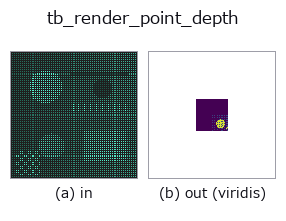

typed op• Data kinds: points → image
• Call: fullseye.apply(img, "tb_render_point_depth", a=0.5, b=0.5) (the 2-D model is one image plus two scalar knobs a,b∈[0,1])

*The figure is the actual output on a synthetic 128×128 input. Left: input, right: output. Point clouds are drawn as a top-down scatter (brightness = z), 1-D series as a line plot, volumes as the maximum-intensity projection along z, videos as the middle frame, complex images as magnitude; return values that are not pictures are shown as the values themselves.*
*The output is shown in a viridis-like pseudo-colour (dark purple = low, yellow = high) so that a field of quantities — distance, phase, orientation, depth — can be read.*
*Knob a does not change the output (measured: identical at 0.1 / 0.5 / 0.9).*
*Knob b does not change the output (measured: identical at 0.1 / 0.5 / 0.9).*
Stages (the ops that come before → this op, left to right):
▸ tb_render_point_depth: stages (docs site)
On other images (synthetic scene / photo / coins. Top row: inputs, bottom row: their outputs. Knobs at default):
▸ tb_render_point_depth: other inputs (docs site)
Point cloud → depth image (z-buffer; each pixel gets the depth of its nearest point). A sample for observation synthesis / appearance inspection.
> The detailed description below is the original text — the summary and the headings are translated.
`project_points(points, K, R, t) で (u, v, z) を取り、round した画素 `(row=v,
col=u)` が size=(H, W) 内かつ z > 0` の点だけを、遠い順に書いて近い点で上書きする
(同一画素は最小 z が残る)。点が無い画素は 0(`tsdf_from_depth / depth_to_points` が
無効値として扱う規約)。返り値 `(H, W)` float64、単位は点の座標の単位。
• 1 点 = 1 画素なので疎な点群は穴だらけになる(`mesh_to_points` で密にしてから)。splat
半径は無い。
• `K は numpy (3,3)、R/t` は省略可。
後段: `depth_to_points で戻す、normals_from_depth で法線、tsdf_from_depth`。
2-D 進化レジストリへ橋渡しした 3d の op `render_point_depth。実装は同じで、呼び出し規約だけ op(v, a, b) に合わせてある。この op に調整点は無く、a も b` も使われない。
• Sample-data catalog (download URLs / licences) — 2-D uses skimage.data (BSD/public domain) plus synthetic images; 3-D lists download URLs for real data sources (Stanford, PDS, …).
• Operator provenance and references — the sources of the research/methods this op family came from.
The program below has been verified to run (same input as the figure). In Studio's help this block becomes buttons that load and run it on the spot.
img_to_points 0.50 0.50 tb_render_point_depth 0.50 0.50
▸ Load this pipeline · Load & run
The examples below call the underlying ledger op render_point_depth. This bridge op is the same implementation adapted to the fn(v, a, b) convention, so the behaviour carries over unchanged (only the call form differs).
• sfm_recon — py -3.11 examples_3d/sfm_recon.py
image as input)identity · gaussian · mean_box · bilateral · unsharp · median · min_filter · max_filter
typed)tb_points_to_voxel · tb_estimate_point_normals · tb_iss_keypoints · tb_angle_3points · tb_project_points · tb_statistical_outlier_removal · tb_radius_outlier_removal · tb_voxel_grid_downsample
*Provenance: ops.py — 2D operator registry. This per-op note is generated by tools/opdocs.py md (do not hand-edit).*
© 2026 Kazufumi Furuse — Fullseye operator documentation. Licensed under Apache-2.0.
{kind=link}
{kind=link}